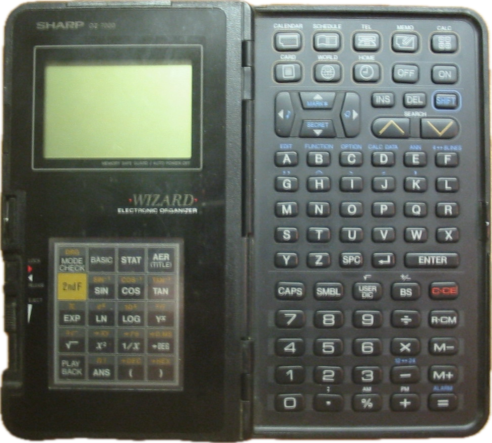
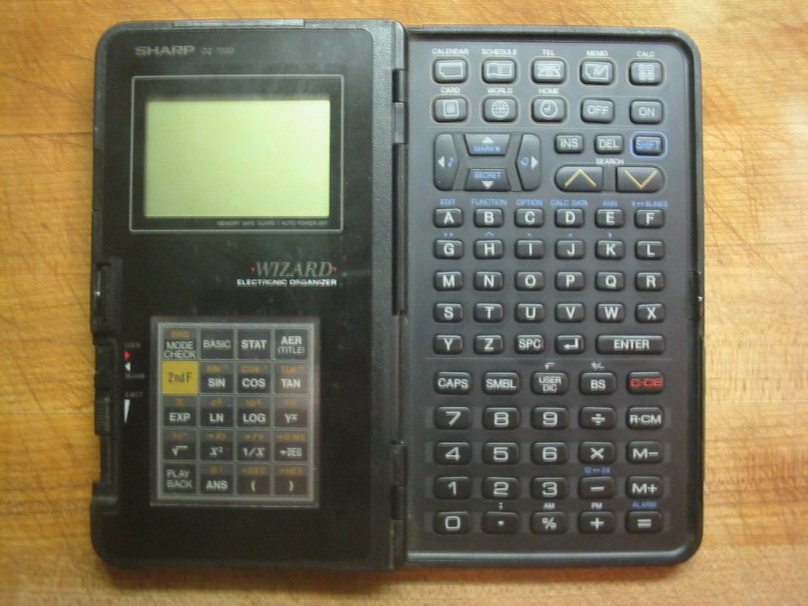

Sharp Wizard OZ-7000
Transparent touch panel over swappable physical IC cards — a plug-and-play hardware UI

Overview
The Sharp Wizard OZ-7000 was Sharp Corporation's first electronic organizer, launched in 1989. It bridged the world of pocket computers and the emerging PDA category, but its defining innovation was a transparent touch-sensitive overlay panel paired with swappable physical IC cards. Each IC card contained ROM software and a printed template visible through the glass; 20 touch zones on the overlay mapped to card-specific functions. The Wizard was commercially successful, spawning a product line that ran through the mid-1990s, and was immortalized in a 1998 Seinfeld episode ("The Wizard") where Jerry gives one to his father as a gift.
Deep dive
The OZ-7000's signature interaction model: a transparent plastic touch-sensitive overlay covering a recessed slot in the right-hand section of the device. The overlay registered touch across a 4×5 matrix of 20 zones. When a user inserted an IC card into the slot behind the panel, the card's printed template — showing button labels, icons, or custom layouts — was visible through the glass. The device's firmware mapped each of the 20 touch zones to card-specific functions. Swapping the card immediately transformed not just the software but the visible input surface — a plug-and-play physical UI that predated capacitive touchscreens and app icons.
Available cards included: OZ-707 Scientific Computer, Memory Expansion, Thesaurus Dictionary, Time and Expense Manager, Investment Planner, Bilingual and 8-Language Translators, Encyclopaedia of Wine, Spreadsheet (26 columns × 999 rows, Lotus 1-2-3 compatible), and games (Sokoban, Tetris, Chess, Backgammon). A BASIC programming card arrived in 1991. Cards typically cost $50–120 each.
At 163 × 94 × 21.5 mm with a 96×64 dot monochrome LCD (8 lines × 16 characters), 32 KB of non-volatile memory, non-QWERTY custom keyboard, and proprietary serial port. Powered by two CR2032 coin cells. The IC card slot predated the PCMCIA standard and was incompatible with it. The US model prefix "OZ" was a pun on The Wizard of Oz; European/Asian models used the "IQ" prefix.
In "The Wizard" (Season 9, Episode 15, aired February 26, 1998), Jerry gives his father Morty a Sharp Wizard. Morty only uses it as a tip calculator. The episode also references a counterfeit knockoff brand called "Willard." The episode cemented the Wizard in American pop culture as a symbol of late-1990s tech aspiration.
The OZ-7000/IQ-7000 (1989) was followed by the IQ-7200 (1991, 64 KB), OZ-8000 (1991, QWERTY landscape), OZ-8200 (128 KB), and models dropping the IC card slot for touch-sensitive displays. The Wizard line eventually evolved into the Sharp Zaurus PDA.
Team & pioneers
- Sharp Corporation Japanese electronics manufacturer founded by Tokuji Hayakawa. The Wizard was developed by Sharp's Electronic Organizer division, which later produced the Zaurus PDA line. No individual designer names have surfaced in public documentation.
Media
